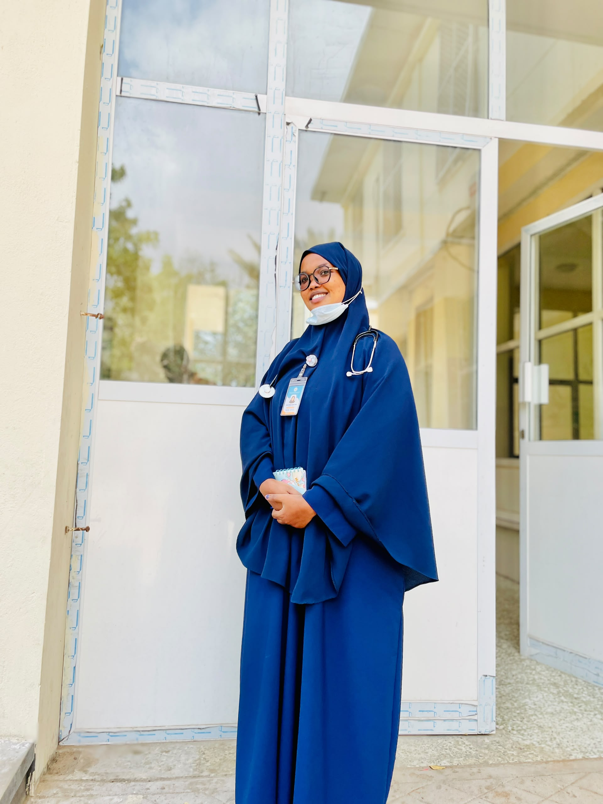
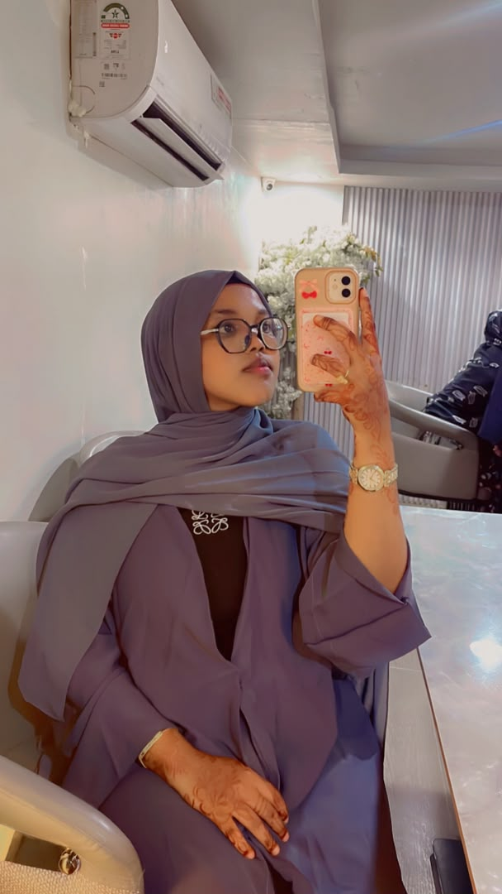
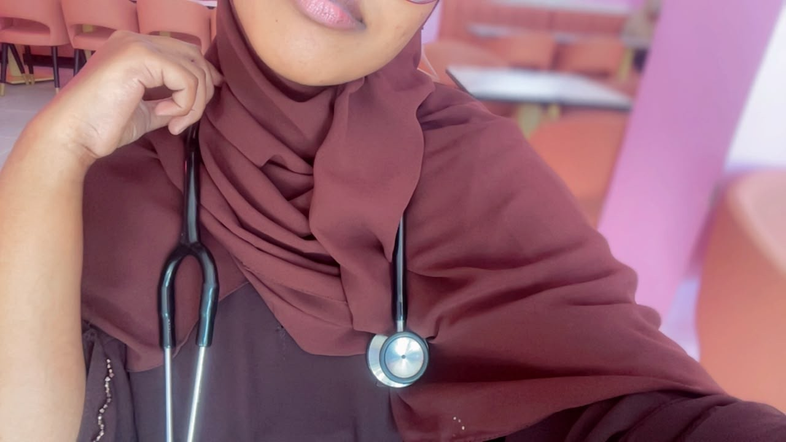
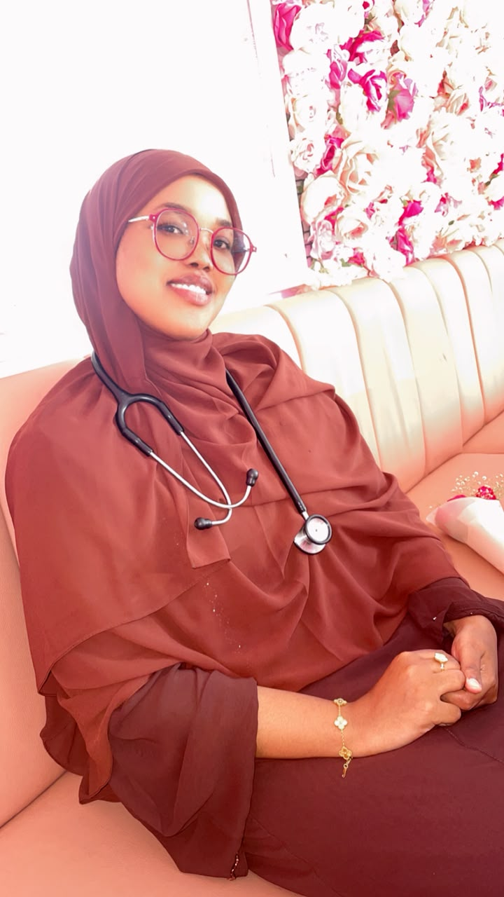
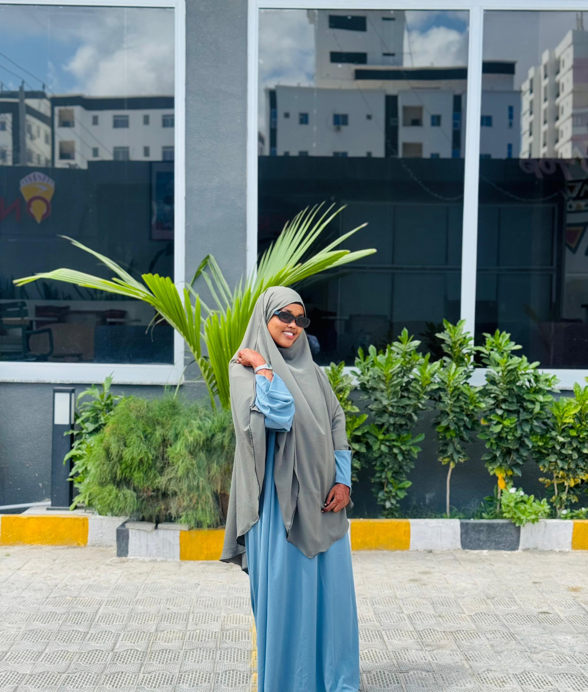
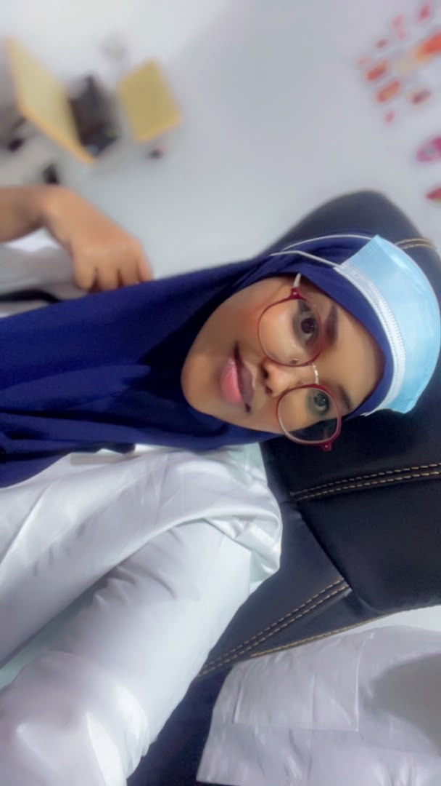
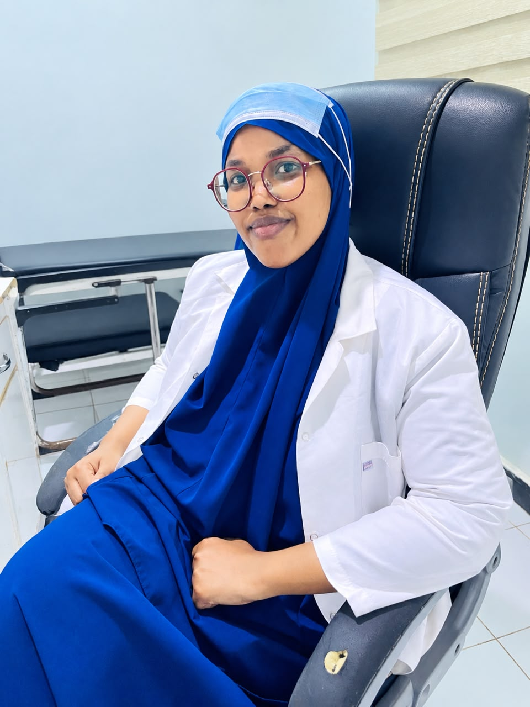
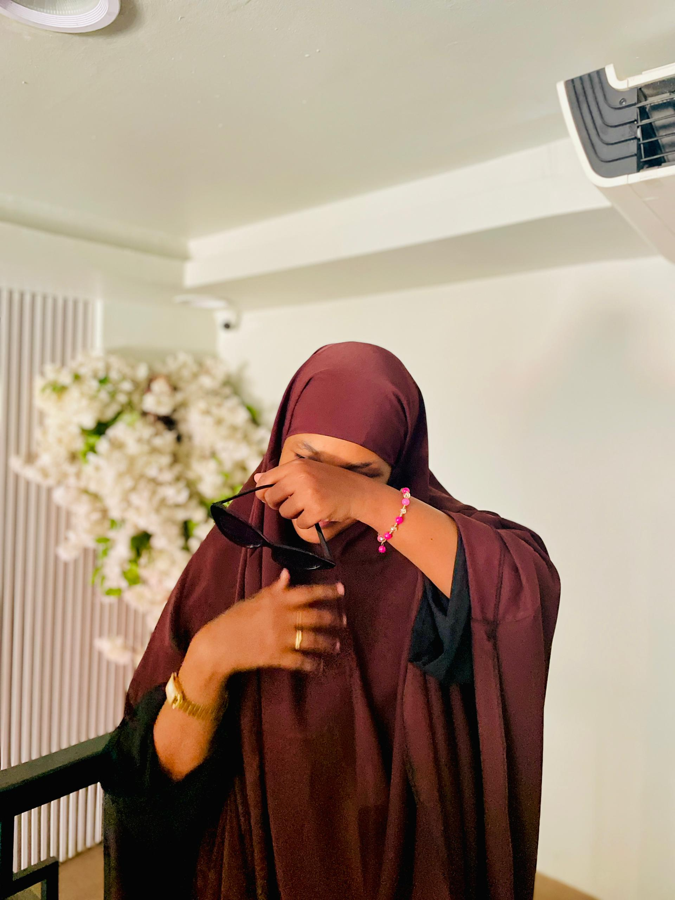

Beautiful Memories 📸
Moments of triumph, friendship, and the road to the white coat. Tap a photograph to see it in full.










To Drs. Zamzam Mohamed Husein
Dear Drs. Zamzam,
Today is more than just an ordinary graduation day; it is the celebration of every late night you spent studying, every difficult exam you overcame with resilience, and every moment you chose never to give up.
“You dreamed of it. You worked hard for it. Today, standing victorious, you can proudly say—
ALXAMDULILLAAH, I DID IT!” 🩺🎓
Your journey through medicine has only been the beginning of great milestones. May the knowledge you gained become a source of healing, your compassion a source of comfort to patients, and your future a fulfillment of every dream you hold dear.
Congratulations on this beautiful achievement, Drs. Zamzam!
HAMBALYO GUUSHAADA, DRS. ZAMZAM! 🎓🩺
Jaamacadda Banaadir · Kulliyadda Caafimaadka · Dufcadda 2026